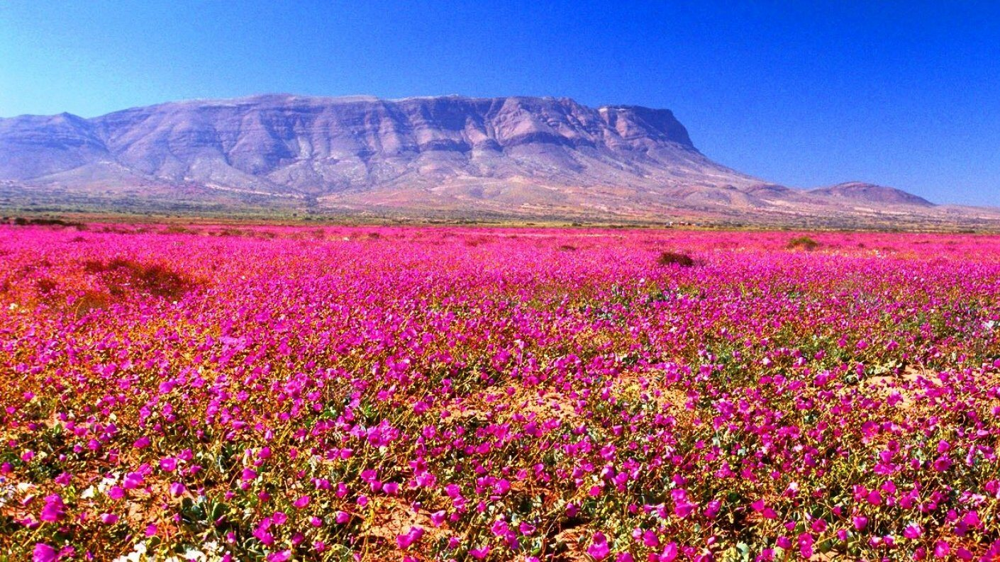

Cosmoclima · Experimento
El Desierto Florido y las vaquitas del desierto
Un desierto que florece, un escarabajo que no vuela, y una pregunta que el modelo original no se hacía: mirando desde afuera, ¿cómo se sabe si adentro hay alguien regulando, o si es un sistema que ya no hace nada y todavía no se cae?

01Un desierto que florece
Hay un desierto en Chile que, algunos años, se cubre de flores. No es una metáfora: el suelo más árido del planeta se llena de Cistanthe, Rhodophiala y decenas de especies más, durante unas semanas, y después vuelve a ser piedra y polvo.
El fenómeno se llama Desierto Florido y ocurre en el norte de Chile cuando cae lluvia suficiente sobre un banco de semillas que llevaba años esperando bajo tierra. No basta con que llueva: hace falta un pulso —una cantidad concentrada en poco tiempo— por encima de un umbral de germinación que la literatura sitúa en torno a los 15 mm. Por debajo de eso, la semilla no arriesga: se queda donde está.
Esa espera es la parte interesante. Un banco de semillas latente no está muerto ni está vivo en el sentido corriente: está disponible. Puede pasar cinco años sin hacer nada visible y germinar la semana siguiente a una lluvia. Cualquier instrumento que mire ese suelo en un año seco y concluya «aquí no hay nada» se estaría equivocando.
El dato duro
La floración no es instantánea. Tras el pulso de lluvia hay un rezago de unos tres meses hasta que la vegetación responde, y un evento dura en promedio 166 días: tarda más en apagarse que en encenderse.
02Gyriosomus, las vaquitas del desierto
En ese mismo desierto vive un escarabajo que la gente del norte llama vaquita del desierto. Su nombre científico es Gyriosomus, un género de la familia Tenebrionidae endémico de Chile: no existe en ningún otro lugar del mundo.
Son animales ápteros —no vuelan, no pueden— y eso los vuelve especialmente interesantes. Un insecto que no vuela no puede escapar de un mal año ni colonizar el valle de al lado: queda atrapado en su pedazo de desierto. El resultado es un género fragmentado en decenas de especies, cada una encerrada en su quebrada, su duna o su ladera. El río Huasco, por ejemplo, funciona como una barrera que separa dos linajes que ya no se mezclan.
La revisión sistemática más reciente reconoce 44 especies descritas agrupadas en nueve clados. Este instrumento trabaja con 42 especies y 222 puntos de colecta georreferenciados, reunidos de museos, publicaciones, observaciones ciudadanas y campañas de campo.
Algunas están en problemas. G. camanchaca —bautizada así por la niebla costera que la sostiene— entró en 2025 al proceso oficial de clasificación de especies del Ministerio del Medio Ambiente. Y en 2022 una de ellas, la vaquita de Paposo, fue nombrada embajadora de la fauna chilena.
Por qué importan para este experimento
Las vaquitas aparecen después de la floración, con un rezago de alrededor de un mes: primero llueve, después florece, después llegan ellas. Esa cadena —lluvia, planta, animal— es lo que el instrumento intenta seguir con datos reales, sin inventar ningún eslabón.
03La pregunta
En 1983 James Lovelock y Andrew Watson publicaron Daisyworld, una parábola en forma de modelo: un planeta imaginario con margaritas blancas y negras que, sin proponérselo ni coordinarse, mantienen la temperatura del planeta habitable. Las negras absorben calor y prosperan cuando hace frío; las blancas lo reflejan y ganan cuando hace calor. Nadie regula nada a propósito, y sin embargo el planeta queda regulado.
Daisyworld responde a una pregunta: ¿puede haber regulación sin intención? Nosotros agregamos otra, que el modelo original no se hacía:
Mirando desde afuera, ¿cómo se distingue un sistema que está regulando de uno que ya no hace nada y todavía no se cae?
La diferencia importa. Un desierto en sequía profunda y un desierto muerto se ven igual desde arriba: los dos están quietos. Pero uno tiene un banco de semillas esperando y el otro no. Si un instrumento no puede distinguirlos, no está midiendo la vida del sistema, está midiendo su fotografía.
Lo que buscamos es un umbral mínimo de variación —lo llamamos κ_H— por debajo del cual no se puede decir nada de un sistema. No porque esté muerto: porque está callado. La distinción entre silencio y muerte es el objeto de este experimento.
04Daisyworld reescrito para un interglacial
El motor parte de Daisyworld, pero ya no son margaritas. Es lluvia real, floración real y Gyriosomus real. Y en el camino hubo que corregir un supuesto de fondo del modelo original.
En Daisyworld clásico la vida calienta el planeta: las margaritas oscuras bajan el albedo, absorben más sol y empujan la temperatura hacia arriba. Ese es el mecanismo correcto para un planeta glacial, donde el problema es el frío.
Pero la Tierra de hoy es un interglacial. El problema no es el frío: es el exceso de energía solar. Y la vida regula enfriando —evapotranspiración, nubosidad, el ciclo del carbono—, no calentando. Medido en este mismo desierto: los años de floración documentada son más fríos, no más cálidos.
El efecto de albedo del modelo original sigue ahí, porque es real y está medido: la floración plena baja el albedo un 2,1 %. Pero es un efecto pequeño y, por sí solo, calentaría. Lo que de verdad enfría es la regulación que la propia lluvia trae consigo. Ese término no se inventó ni se ajustó a ojo: se midió por regresión contra la temperatura real, y dio −9,4 °C por unidad de floración.
Un hallazgo incómodo del camino
Durante la construcción se descubrió que la «libertad funcional» del instrumento no medía libertad: medía la distancia a la posición de un control deslizante de la interfaz. Como era un valor absoluto, formaba una V —alejarse hacia arriba y hacia abajo puntuaba igual— y el resultado era que el desierto muerto puntuaba casi el doble que el desierto florido. Se corrigió midiendo la amplitud real de estados disponibles. Queda documentado porque un error así puede sobrevivir años sin que nadie lo note.
05Arquitectura del experimento
El instrumento encadena datos reales hasta una clasificación en cuatro estados. Ningún eslabón usa números inventados: cada constante viene de literatura publicada o de una regresión contra datos medidos.
Entrada · lluvia
Serie mensual del punto-reloj, 1966–2026, enteramente de estaciones reales: pluviómetro en el punto hasta 2018, y desde 2019 doce estaciones vecinas reescaladas al punto.
Entrada · temperatura
Máxima y mínima diaria, 22.139 días sin huecos, fuente única.
↓
Floración
Umbral de germinación 15 mm · rezago 90 días · duración 166 días. Curva ajustada contra eventos documentados.
Gyriosomus
Sigue a la floración con ~1 mes de rezago. No alimenta la física: es la salida observable.
↓
Temperatura del planeta
Stefan-Boltzmann real sobre el albedo, menos la regulación interglacial (−9,4 °C por unidad de floración).
↓
Cuatro invariantes
Libertad funcional · diferencia estructural · acoplamiento con el entorno · error operativo. En esta ventana de 62 años la clasificación la deciden los dos primeros de cada par; los otros dos se cumplen siempre.
↓
Clasificación
Jardín Fértil · Cierre · Selva Hostil · Colapso, contra umbrales que la teoría define como condiciones de posibilidad.
Las cuatro zonas
| Zona | Viable | Activo | Qué significa |
|---|---|---|---|
| Jardín Fértil | sí | sí | El desierto florece: se sostiene y se mueve. |
| Cierre | sí | no | Equilibrio sin cambios. El desierto en sequía está aquí: quieto, pero con sus semillas vivas. No es lo mismo que morirse. |
| Selva Hostil | no | sí | Se agita sin poder sostenerse. |
| Colapso | no | no | Ni activo ni viable. |
Doble motor, verificación cruzada
La física corre en dos implementaciones independientes: una en el navegador y otra en Node.js, generada automáticamente desde el mismo código fuente. Las dos se comparan sobre los 60 años completos y deben coincidir en los cuatro valores de cada año. Es una garantía poco común: un error de transcripción o una constante desincronizada aparecen de inmediato.
06Resultados
El instrumento corre los 60 años completos, día a día, y clasifica cada momento en una de las cuatro zonas. El resultado se somete a cinco criterios que no participan del modelo: se construyeron con datos externos —eventos de floración documentados en la literatura, lluvia medida por estaciones meteorológicas, el período de megasequía— y ninguno puede ajustarse desde dentro del instrumento.
| Criterio | Resultado | Medida |
|---|---|---|
| Cada año produce una trayectoria propia, sin moldes repetidos | cumple | 61 de 62 únicas |
| Los años de floración documentada superan a los años control | no cumple | 38,19 vs 38,25 |
| La megasequía queda por debajo del promedio | cumple | 23,1 vs 40,9 % |
| Correlación con la lluvia real medida | cumple | ρ = +0,217 |
| En megasequía domina Cierre, no agitación | cumple | 42,9 vs 22,3 % |
Cuatro de cinco. El más exigente es el primero: en 62 años, 61 producen una combinación distinta de las cuatro zonas y ninguna se repite tres veces o más. El instrumento no está devolviendo plantillas de año: cada año tiene su forma.
El quinto criterio —que los años de floración superen a los control— no se cumple, y falla por seis centésimas de punto: 38,19 contra 38,25. Es un empate, pero un empate no es un cumplimiento y así queda anotado.
Por qué ese criterio no puede cumplirse tal como está construido
Tres de los trece años de floración documentada —2021, 2022 y 2024— caen dentro de la megasequía. Al instrumento se le está pidiendo dos cosas contradictorias al mismo tiempo: que la megasequía quede baja y que esos mismos años queden altos. Además, varias de esas floraciones fueron en parches localizados, a decenas de kilómetros del punto de referencia: un promedio regional no puede ver una mancha local. Es un límite del dato de contraste, no del modelo.
Cómo se reparten los 60 años
| Zona | % del tiempo | Lectura |
|---|---|---|
| Jardín Fértil | 40,9 % | El desierto se sostiene y se mueve |
| Selva Hostil | 25,7 % | Se agita sin poder sostenerse |
| Cierre | 22,3 % | Equilibrio sin cambios: quieto, pero vivo |
| Colapso | 11,1 % | Ni activo ni viable |
Un episodio que vale la pena mirar
En la megasequía de 2019-2025, el estado dominante es Cierre: 42,9 % del tiempo, contra 22,3 % del promedio de los 60 años. El instrumento no dice que el desierto murió; dice que se detuvo. Es exactamente la distinción que este experimento buscaba poder hacer desde afuera, y es la que un promedio de vegetación no permite: en la foto satelital, un desierto detenido y un desierto muerto son el mismo píxel.
Los cinco criterios se calcularon sobre la corrida verificada con los dos motores independientes. Ambos coinciden en los cuatro valores de cada uno de los 62 años.
07Lo que este instrumento no puede decir
Un instrumento honesto declara sus límites con la misma claridad que sus resultados. Estos son los de éste, todos verificados:
| Límite | Detalle |
|---|---|
| Albedo extrapolado | El 2,1 % de caída de albedo se midió entre los 17,5° y 29,7° de latitud sur. La zona de este experimento está en torno a los 31° S: el dato se extrapola cerca de un grado hacia el sur. |
| Umbral de germinación | Los 15 mm y los 166 días provienen del resumen público de la fuente; la tabla completa está tras un muro de pago. |
| La temperatura es reanálisis | La temperatura es reanálisis: un modelo que asimila observaciones, no un termómetro en el suelo. La lluvia, en cambio, ya no lo es en ningún tramo (ver abajo). Se declara, no se disfraza. |
| La lluvia de 2019 en adelante se estima, no se mide en el punto | Hasta 2018 hay pluviómetro en el punto de referencia. Desde 2019 no existe ninguno, así que la lluvia se deriva de doce estaciones reales vecinas —la más cercana a 17,7 km— reescaladas al punto con razones calibradas sobre décadas de registro conjunto. Es medición, pero trasladada. Su error propio, medido dejando un año fuera, es de unos 9 mm por mes de lluvia. |
| Nadie cruza el corte de 2018 | Ninguna estación funcionó a ambos lados del corte, así que no hay forma de comprobar que las estaciones nuevas midan igual que las antiguas del mismo sitio. Comparadas contra una referencia común aparece un escalón de entre 1,00 y 1,44. El instrumento se corrió en los dos extremos de ese rango: los 62 años conservan su zona dominante en ambos, y cuatro de los cinco criterios se cumplen en ambos. |
| Dos invariantes deciden, no cuatro | De los cuatro invariantes, en esta ventana de 62 años la activación la decide la libertad funcional y la viabilidad el acoplamiento con el entorno. La diferencia estructural se cumple siempre —el sistema nunca se homogeneiza— y el error operativo se mantiene bajo su umbral de colapso salvo en un 0,1 % del tiempo. Que no discriminen aquí no significa que sobren: significa que este sistema, en este período, nunca los violó. |
| Sin satélite antes de 2000 | Los eventos de 1983, 1991 y 1997 no tienen imagen satelital de vegetación: son anteriores a MODIS. Ese hueco no lo arregla ningún cálculo. |
| Un punto, no una región | El instrumento lee la lluvia en un punto de referencia. Una floración en parches, a decenas de kilómetros, puede no verse desde ahí. |
| Años en conflicto | Tres años son a la vez floración documentada y megasequía. Ningún resultado puede satisfacer los dos criterios al mismo tiempo. |
08Galería de especies
Las láminas de estudio y las fotografías de campo son obra del entomólogo Marcelo Guerrero. Las láminas se recortaron sobre fondo transparente para esta publicación; las fotografías de campo se muestran tal como fueron tomadas.
Las imágenes rotuladas Gyriosomus sp. corresponden a ejemplares cuya determinación taxonómica está en curso. Se publican porque el trabajo sigue abierto.
09Fuentes de datos
| Fuente | Aporta | Período | Tipo |
|---|---|---|---|
| CR2 · Centro de Ciencia del Clima y la Resiliencia | Lluvia diaria y mensual, 874 estaciones chilenas | 1900–2018 | Estación real |
| DMC / FDF / INIA · Informes Anuales de Agua Caída | Lluvia diaria, 55 estaciones de Atacama y Coquimbo; doce de ellas dentro de 60 km del punto de referencia | 2019–2026 | Estación real |
| Open-Meteo / ERA5 · ECMWF | Temperatura diaria del punto de referencia (la lluvia ya no se toma de aquí) | 1966–2026 | Reanálisis |
| Dirección Meteorológica de Chile | Anuarios climatológicos y series de estación | 1979–2026 | Estación real |
| NASA GIBS · MODIS Terra | Índice de vegetación como testigo independiente | 2000–2026 | Satelital |
| NOAA CPC · ONI v5 | Índice oceánico de El Niño y La Niña | 1966–2026 | Índice oficial |
| Anguita-Salinas et al. · Tabla S1 | 153 especímenes georreferenciados | — | Colecta de museo |
| GBIF · iNaturalist | Ocurrencias y fotografías con licencia abierta | — | Ciencia ciudadana |
| Marcelo Guerrero | Campañas de campo, localidades y láminas fotográficas | 1997–2026 | Comunicación personal |
| Solange Varela | Datos climáticos | — | Comunicación personal |
10Bibliografía
- Watson, A.J. & Lovelock, J.E. (1983). Biological homeostasis of the global environment: the parable of Daisyworld. Tellus B 35(4): 284–289.
- Chávez, R.O., Moreira-Muñoz, A., Galleguillos, M., Olea, M., Aguayo, J., Latín, A., Aguilera-Betti, I., Muñoz, A.A. & Manríquez, H. (2019). GIMMS NDVI time series reveal the extent, duration, and intensity of «blooming desert» events in the hyper-arid Atacama Desert, Northern Chile. International Journal of Applied Earth Observation and Geoinformation 76: 193–203. doi:10.1016/j.jag.2018.11.013
- He, B., Huang, L., Liu, J., Wang, H., Lű, A., Jiang, W. & Chen, Z. (2017). The observed cooling effect of desert blooms based on high-resolution MODIS products. Earth and Space Science 4(5): 247–256. doi:10.1002/2016EA000238
- Anguita-Salinas, S. et al. (2026). Systematics and phylogeny of Gyriosomus Guérin-Méneville. Systematic Entomology 51(1): e70011. doi:10.1111/syen.70011
- Pizarro-Araya, J. & Jerez, V. (2004). Distribución geográfica del género Gyriosomus Guérin-Méneville, 1834: una aproximación biogeográfica. Revista Chilena de Historia Natural 77: 491–500.
- Pizarro-Araya, J. (2010). Hábitos alimenticios del género Gyriosomus. IDESIA 28(3): 115–119.
- Guerrero, M. & Aceituno, G. (2020). Nuevas especies del género Gyriosomus y nuevo estatus para G. foveopunctatus laevis Kulzer. Revista Chilena de Entomología 46(2).
- Guerrero, M., Diéguez, V., Anguita-Salinas, S. & Zúñiga-Reinoso, Á. (2023). Zootaxa 5319(2): 283–291.
- Zúñiga-Reinoso, Á., Pinto, C. & Predel, R. (2019). Nueva especie asociada al desierto florido de 2017. Annales Zoologici 69(1): 105–112.
- Cepeda-Pizarro, J.G., Pizarro-Araya, J. & Vásquez, H. (2005). Impacto del ENOS de 1997 sobre la fauna epígea. Revista Chilena de Historia Natural 78: 635–650.
- Armesto, J.J. et al. (1993). Umbral mínimo de precipitación para la germinación en el desierto costero. (citado en Chávez et al. 2019)
- Vidiella, P.E., Armesto, J.J. & Gutiérrez, J.R. (1999). Vegetation changes and sequential flowering after rain in the southern Atacama Desert. Journal of Arid Environments 43: 449–458.
- Ortlieb, L. (1994). Las mayores precipitaciones históricas en Chile central y la cronología de eventos ENOS en los siglos XVI–XIX. Revista Chilena de Historia Natural 67: 463–485.
- Lovelock, J.E. La Hipótesis Gaia. Referencia del valor de temperatura media planetaria usado como ancla de relajación térmica del motor.
11Ficha
- Experimento
- Cosmoclima — Desierto Florido y Gyriosomus
- Dirección científica
- Alexis López Tapia
- Desarrollo
- Claude (Anthropic)
- Equipo
- Trabajo realizado dentro del equipo transinteligente RMD 2.0
- Período simulado
- 1966–2026 · 60 años, resolución diaria
- Verificación
- Doble motor independiente (navegador y Node.js), comparado año por año
- Repositorio
- github.com/RSTChile/Cosmolab
- Agradecimientos
- Al entomólogo Marcelo Guerrero, por los datos de las especies de
Gyriosomus, las localidades de sus campañas de campo y las láminas fotográficas que
ilustran este trabajo.
A la meteoróloga Solange Varela, por los datos climáticos.